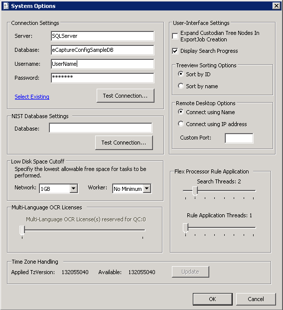
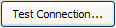

Before beginning to set the system options, ensure that the:
Consult with your System Administrator for additional SQL Server configuration requirements prior to using eCapture.

Under User-Interface Settings, select from:
Enter a Custom Port value to optionally connect to a non-default port. All connection requests use the same port. Executed by building a command string and shelling to mstsc.exe.
Adjust this value to allow for how many dtSearch rules can run simultaneously. A higher value will use more resources from the eCapture Controller; however, it will allow multiple searches to finish faster if the Controller machine has enough processor capacity. Too many threads may not be handled well on slow or heavily loaded machines.
Adjust this value to allow for how many non-dtSearch rule applications can run at once (file type filters, item ID imports, etc). These rule applications impact the SQL server rather than the eCapture Controller, and in turn can impact how well eCapture runs on the whole due to increased SQL activity while rules are applied.

. A dialog appears with connection status information.To start the eCapture Queue Manager, right-click the eCapture Queue Manager icon in the system tray and choose Start. The eCapture Queue Manager starts and the icon color changes.
Next Step: Configure the Queue Manager
Related pages:
Access Stored Configuration Database Connection Settings
Select a Different SQL Server and Database
Add or Configure Additional Databases